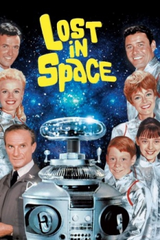

Country:United States, 21 hours
Spoken languages:English
Genres:
Director(s):
Writer(s):
Video Codec:Unknown
Number: 2399


Certification:
Storyline:
The space family Robinson is sent on a five-year mission to find a new planet to colonise. The voyage is sabotaged time and again by an inept stowaway, Dr. Zachary Smith. The family's spaceship, Jupiter II, also carries a friendly robot who endures an endless stream of abuse from Dr. Smith, but is a trusted companion of young Will Robinson
Cast:
Medium: Original DVD,
Loaned: No
Aspect ratio: Unknown